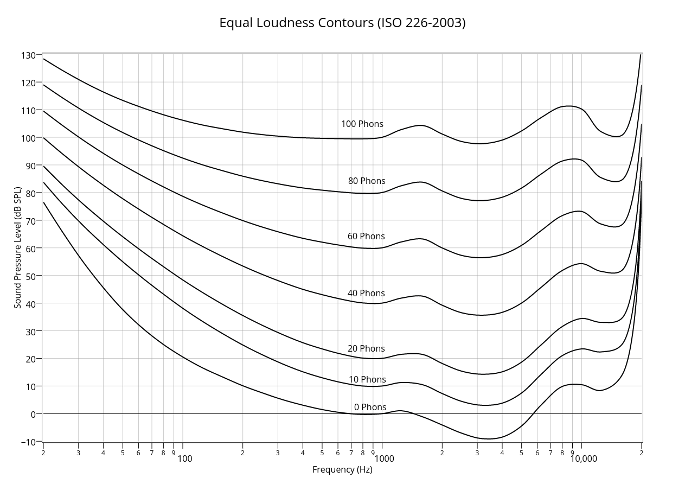
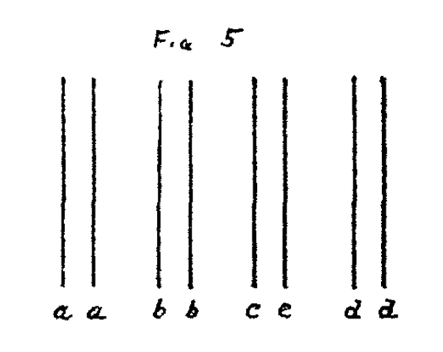
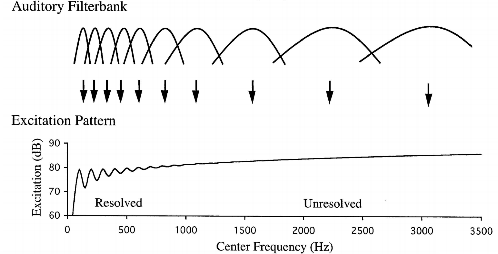
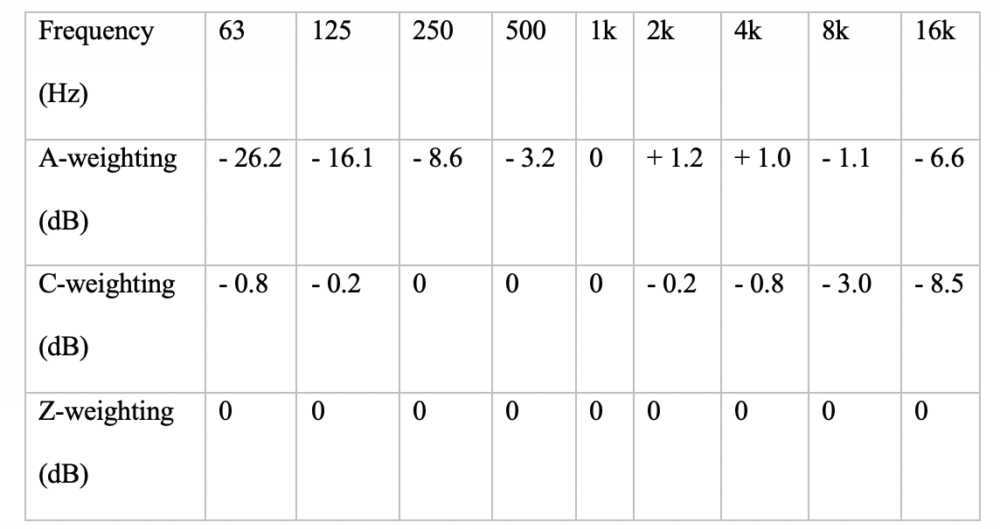
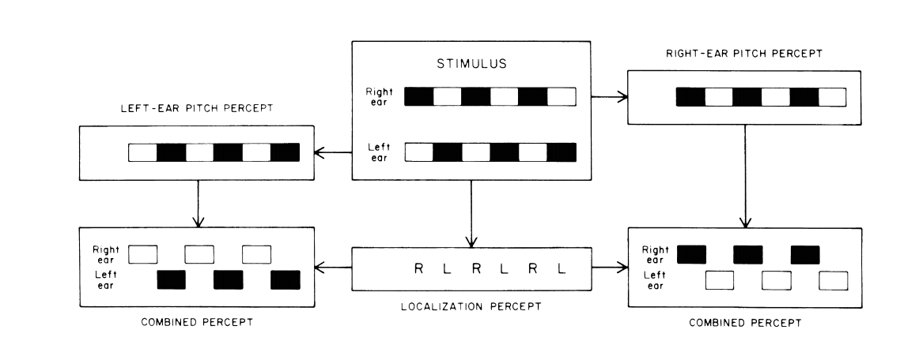

Tell us about your sonification application for information most relevant to your design.
Select which auditory mappings are being used in your application.
See some examples of what we mean below:
Frequency and Timbre are being used.
Data Dimension
Auditory Dimension
Temperature
Pure Tone
Humidity
Square Wave
Frequency and Space are being used.
Data Dimension
Auditory Dimension
Seconds of analog clock
Pitch
Location of clock hand
Horizontal plane
Frequency and Loudness are being used.
Data Dimension
Auditory Dimension
Wave Frequency
Pitch
Wave Height
Amplitude
Are any data variables represented using any other modalities i.e. as text/speech/visualisaiton?
Introduction
The following clickable modules contain concise breakdowns of particular perceptual complications might you encounter when using the mapping strategies you listed. The first module discusses human auditory perception research that is relevant when mapping data to pitch and applies to all sonification applications. The information provided has been extracted from a wider body of work and condensed down to be more accessible. Also included are links to interactive audio-visual demonstrations that aim to help users understand the auditory phenomenas discussed. Sources to the cited information can be found at the bottom or in References.
NOTE: Audio-Visual examples opened in fullscreen tabs (as opposed to left-clicked) may experience bugs.
These interactions are also incompatible on mobile and in the Safari browser.
Single Pure Tone Mapping
When mapping any data variables to pitch (even pure tones) it is important to recognise that pitch is percieved logarithmically in relation to frequency. In music, intervals are measured as ratios between frequencies rather than absolute differences in frequency. For example, the intervals ‘220Hz to 440Hz’ and ‘440Hz to 880Hz’ are perceived as the “same”, despite having different absolute numerical distances. This is because they are both 2:1 frequency ratios. This non-linearity has been correlated to the non-linear spacing of different frequency-perceptive cells throughout the human auditory system. In addition to this non-linearity, it is also important to recognise that despite the human hearing ranging from 20Hz – 20Khz, it is between the ranges of 2000hz – 4000Hz that the auditory system is most perceptive and accurate in detecting frequency (Baldwin, 2012). Unfortunately, our loudness perception of individual frequencies within this range varies significantly and persistent use of frequencies within this range can be fatiguing to users. Beyond the highest point of this range, perceptual inaccuracies can negatively affect human perception of interval ratios. Below this range, however, perceived interval ratios are still consistent (Zwicker & Fastl, Ch 5, 2013). For example, research has found that while the average subject can accurately set half of 440Hz to 220Hz and perceive it as so, the same ability falters when trying to do the same for 8Khz.
In sonification, using a frequency range that a human is most perceptive to seems logical. However, a slightly lower range may be more beneficial as (a) perceived interval ratios within this range are still consistently accurate, (b) it may be less fatiguing to users, and (c) it also takes advantage of the ‘flattest’ points of the equal-loudness contours.
Suzuki & Takeshima (2004) reviewed a number of equal-loudness-level contours and published revised contours that are now used today in international standards. Such contours represent the sound pressure levels of a source that result in a perception of an equal-loudness magnitude as a function of sound frequency. These contours are particularly useful when identifying how sensitive humans are to frequencies across different sound pressure levels. Using these contours, it is possible to make an informed decision on what particular frequency range to use when mapping a data dimension to pitch. More information can be found on this in the Loudness module (available on the main Guidelines page if not below) and is especially useful if using loudness as a specific mapping.

Equal loudness level contours cited in ISO 226:2003
In summary, it is suggested that where a limited range is viable, 400Hz-1400Hz is most beneficial as it takes advantage of the range of frequencies humans are still reasonably perceptive to while also providing a relatively flat 'response' in terms of loudness according to the equal-loudness contours.
Multiple Simultaneous Streams
When more than one data variable has a pure tone mapping things become more complex. Pure tones close in frequency have the potential to either merge into a single complex tone or phase with one another. The frequency distance between the multiple streams is critical. Bregman (1990) refers to the merging or perceptual grouping of tones as 'streaming'. In short, sound sources might be perceived as separate auditory streams (segregated) OR as one part of a group of streams that have merged into one percept (streaming) as a result of similarities in auditory characteristics. In this case, the similarity is in pitch, specifically how close in pitch they are. Streaming can occur when tones are presented both sequentially and concurrently (Bregman et al., 1990; Rose & Moore, 2000; Fishman et al., 2004; Oxenham, 2008).
This is a link to a very simple interactive two-channel audio-visual example that demonstrates 'streaming'. Click and hold to play the audio. Drag the cursor to change the pitch of the left channel and try and bring it close to the middle where the right channel plays at around 1Khz. With headphones the phasing is largely mitigated even when the continuous tones are very close in frequency. However, the two streams can still perceptually merge as one despite being binaurally seperated (more about this in the 'spatial' module). This makes using multiple pure tones as individual mappings in applications such as auditory graphs difficult.
Multiple Sequential Streams
'Streaming' also occurs when pure tones are presented sequentially. Even when tones are played at discrete intervals, their frequencies still affect how humans perceptually allocate them, and can somewhat disrupt our serial recall of tones. In order to understand this better it helps to review the "Principle of Belonginess". In Gestalt psychology ‘Belongingness’ refers to how humans perceptually group sensory objects as a means of interpreting chaotic stimuli as a perceptual scene. In Bregman's (1990) Auditory Scene Analysis, the "Principle of Exclusive Allocation" is analogous to "Belongingness" in that if we perceptually place one object into a group of similar objects, it can’t then be allocated anywhere else. Below is a visual example presented by Koffka (1922), a Gestalt psychologist who drew on the possible links between visual and auditory perception.

A visual example of perceptual grouping; the space between the pillars (letters) acting as the principle cause of separation and integration (Koffka, 1922)
The most apparent grouping here is the stripes (the space between the 1st and 2nd ‘a’; 1st and 2nd ‘b’; and so on) that Koffka calls the ‘figure’. The rest of the image he refers to as the ‘ground’. An auditory equivalent are tones temporally grouped into pairs separated by a gap of silence. Koffka refers to this gap of silence as the 'stillness', a term that acknowledges the ever present room noise level.
This is a very simple interactive audiovisual example of temporal perceptual grouping, where tones group into pairs because of how close they are to each other (temporally). The 'stillness' is represented by noise. Click and hold to start the audio. Click the toggle in the top left (or press the tab key followed by the spacebar) to contrast this with tones temporally unpaired.
Now back to our sequential tones. The conflict arises between our tendency to group the tones temporally (i.e. sequentially) versus our tendency to group the tones spectrally (i.e. by frequency). This conflict arises at higher presentation rates and is relevant to most sonification applications. During sequential playback, a single perceptual stream begins to split into multiple frequency groups (low and high) as the presentation rate is increased. Additionally, if a single data variable is mapped to pitch and its values drive a wide ranging pitch, the variable’s sequential values may be perceived as two distinct sequences (low and high).
This is an interactive audiovisual tool that demonstrates the effects of various presentation rates. Click and hold to start the sequence. The cursor's location on the x-axis dictates the starting frequency. The cursor's location on the y-axis dictates it's tempo. Toggle the loop button in the top left to hear it repeat. Start by listening to the sequence at a lower tempo first. The order of the notes should be easily perceived. Now try at a faster tempo. Do any frequency groupings become apparent?
Identifying the thresholds (pitch distance, presentation rate) where streaming occurs is a complex task and will depend on the frequency range used in the sonification application. In addition to this, once this threshold has been surpassed and a single stream has perceptually split into two segregated streams, the threshold at which these streams revert back to a single perceptual stream isn’t necessarily the same (Bregman & Rudnicky, 1975). This is likely the result of attention mechanisms where streams are allocated to perceptual objects (Shinn-Cunningham, 2008). In this manner, the streams are rejected or excluded from other potential streams because of the 'Principle of Belongingness' which Shinn-Cunningham also references. Locating the average thresholds for potential users of the application is a task that requires experimentation.
Using Complex Tones
One potential way to segregate concurrent streams of sonified data is by making each stream uniquely complex. Put simply, this involves utilising timbre. One example of this is using samples of timbrally distinct instruments such as strings and brass to segregate concurrent streams. This is exactly the approach the developers of the app.twotone.io use to sonify data.
NOTE: In some auditory attention studies (Baddeley, 1998), it has been found that performance in various response-driven tasks dropped when participants were presented with ‘distractor’ stimuli from the same modality as the task. An example of such being auditory tasks disrupted by auditory distractors. This suggests that, no matter what, there is limited informational capacity for processing and storing stimuli from the same modality.
Another example of this is using modulation patterns to segregate streams (Sheft, 2007). Sheft proposes that enveloping can be used to adjust onset synchrony/asynchrony to affect streams individually, making them more distinctive. In such examples, however, the perceptual change can be temporal as well as timbral. Similar envelopes can also be applied to synthesis parameters of amplitude modulation or frequency modulation, or even filters to affect tone complexity.
In order to formulate a more in-depth approach to using tone complexity to segregate streams, it is important to understand how the harmonics of a tone affect frequency selectivity (ability to isolate and identify varying frequencies within a complex tone). The harmonic number of a complex tone has been identified as a key factor in the ability for humans to perceive frequency (Bernstein & Oxenham, 2003). In addition to this, it has been found that when streams are played concurrently, the low-numbered harmonics of the complex tones play the most important role in segregating the streams (Oxenham, 2008). Shown below are peak outputs where an auditory bandpass filter (modelled on human auditory perception) responds to particular harmonic components (100Hz for example) and troughs where its response is split between two harmonic components (150hz for example). These visual representations are known as excitation patterns.

Band-pass characteristics of auditory filters that have wider absolute bandwidths at higher CFs and the resulting excitation patterns (Plack and Oxenham, 2005).
The lower harmonics at which these peaks occur are known to be ‘resolved’. As the center frequency of the filter increases into higher frequencies, the bandwidth (absolute bandwidth as a function of the center frequency) actually increases and begins to exceed the harmonic spacing, resulting in points between harmonic components outputting the same as those lower frequency ‘peaks’. The higher harmonics where this occurs are known to be ‘unresolved’. To reiterate, this suggests that it is the low-numbered harmonics of the complex tones that are most important. This means that adding only three or four harmonics should be an affective means of segregating a particular tone among multiple pure tones and has been shown to be true in a study by the author of this web guide (Fitzpatrick & Neff, 2018).
This is an interactive audiovisual tool that can be used to demonstrate the streaming effect of concurrently sonified data streams, as well as the use of a sawtooth wave to focus or isolate a particular tone. Click and hold to start the audio. Each channel can be toggled on or off. Each channel may also be 'focused' i.e. converted from a sine wave to a sawtooth wave. Refresh the page (CMD/Ctrl-Shift-R) to refresh the data points on the graph. Note a Sawtooth wave is not simply the first four harmonics; this is just a simple example of isolating a particular trend.
It's worth noting that there is other research, however, that suggests high-numbered harmonics do play some role in identifying the pitch of the fundamental frequency, and that harmonic ‘resolvability’ isn’t the sole concern (Arehart & Burns, 1999). It has been suggested that the temporal envelope resulting from unresolved harmonics at higher frequencies helps with pitch selectivity. This supports the positive results seen in Sheft’s (2007) approach that used envelopes to affect onset synchrony/asynchrony to distinguish tones.
In short, the two approaches can be used to segregate concurrent streams through timbre. The first being the utilisation of the first few low-numbered harmonics, and the second being the modulation of a stream's signal using temporal envelopes. In some cases it might be possible to use both approaches in conjunction with one another.
One last point is that stream segregation takes time to build up (Bregman, 1978; Micheyl et al., 2005; Deike et al., 2012). Again, the temporal threshold at which two streams begin to perceptually merge depends on the stimuli. It has been suggested that attention-based processes beyond the auditory periphery are partly responsible for this build-up time (Snyder et al., 2006). Reviewing the above sources suggests that the build-up time is relatively short and unlikely to negatively impact PMSon applications. However, in more specialised approaches to applied sonification (like Model-Based Sonification), this build-up time might be a concern, and require further experimentation.
Equal Loudness Contours
The most important observation when it comes to using loudness mappings is the most simple: various frequencies require different levels (dB) to sound equally loud (phons), as seen before in the above module with the equal loudness contours (included again below). These contours follow the approach first proposed in the original Fletcher Munson Curve. Fletcher and Munson (1933) formulated their well-known Fletcher Munson Curve by using carefully defined parameters in conjunction with a fixed ‘reference tone’ (1000Hz). They formulated their curves by measuring the change in intensity required for a tone to be as ‘equally loud’ as the reference tone. So a 1khz tone playing at 40 dB SPL is perceived as 40 phons. The sone scale was also later developed to provide a subjective linear scale of loudness using a range of phons, for example 40-100. In this scale, 1 sone = 40 phons, 2 sones = 50 phons, 4 sones = 60 phons, etc. More recently, Suzuki and Takeshima (2004) reviewed existing well-known contours proposed by researchers that include Fletcher and Munson (1933), Zwicker and Feltdkeller (1955), and Robinson and Dadson (1956). In the second part of their paper, they proposed a new family of contours based on 12 more recent studies outlined in their paper.
Equal loudness level contours cited in ISO 226:2003
While a number of measurement standards that account for relative loudness perceived by humans exist, the most commonly used family of curves is the A-weighting (IEC 61672-1:2013, 2013), as seen below. In synthesis, the parameter primarily used to affect loudness of a tone is the amplitude of an oscillator. As a result, manipulating amplitude envelopes like ADSR (attack, decay, sustain, release) is going to affect the loudness of the tone. A useful tool for effectively implementing loudness in sonification is the AmpComp object in SuperCollider. Alternatively, some designers try and use a frequency range where human hearing has a relatively flat response like 400Hz to 1400Hz.

A table representing the tolerances of frequency weighting curves as specified in IEC 61672-1:2013.
Loundess of Complex Tones
When using complex tones or noise, the output dB level does not account for relative loudness perceived by humans as outlined in the equal loudness level contours, regardless of the units of sound level measurement (analog or digital). In order to intelligently map data variables to loudness, where more than one frequency or specific bandwidth is used, the designers cannot rely on the above approaches. For example, Schneider and Parker (1990) revealed that when the loudness of frequency-pairs is contrasted with one another (as opposed to just two single frequencies contrasted), the intensity range at either side of the frequencies affects the comparative loudness of both frequency-pairs. In this context, the pairs are evaluated along a unitary loudness dimension. This means despite there being two sequential tones, the two share a unitary perceptual loudness as each tone never appears in isolation. It is therefore advisable to only use loudness mapping for data that is one-dimensional, with only one variable presented at a time.
If mapping multidimensional data to loudness is desirable (for whatever reason), using more than one frequency is the only realistic option. In these circumstances, it is necessary to make sure discrete tones are equally loud, rather than simply equally level (dB). If data variables are mapped to individual noise signals distinguished using specific bandwidths, then perceptual inconsistencies are likely to arise because of the ‘critical band’ phenomenon. The ‘critical band’ is the threshold at which a signal becomes louder as its bandwidth increases. In the models proposed by Glasberg & Moore (2002), overall loudness is determined by the 'specific loudness’, a representation of loudness per critical band that is derived from excitation patterns. In the last two decades, these models have been expanded on, so that they account for time-varying sounds and binaural inhibitions (Moore & Glasberg, 2007; Moore & Glasberg, 2016). Referring to such models when mapping data to various complex signals is key when trying to avoid unequal loudness perception. The same can be said when mapping a variable to bandwidth itself, as again perceived loudness will change as the bandwidth does. Another helpful SuperCollider tool is the Loudness object, a perceptual loudness function which outputs loudness in sones. It is based on Zwicker and Glasberg/Moore/Stone loudness models.
Loudness and Numerical Bias
Another concern, outlined by Arieh and Marks (2011) is numerical bias influencing loudness judgments (among other factors). They explain that changes in loudness occur as a result of response bias in the judgment phase, rather than an actual perceived change in loudness. In these situations, participants depend on a constant range of numerical responses that are independent of (and therefore not reflective of) the actual range of the physical stimuli. This, theoretically, inhibits a participants’ ability to make an entirely relative judgement, as it opens up the possibility of an absolute judgement based on the numerical values. Or worse, the participants might make an arbitrary compromise between the two, blurring the lines further. There are interesting parallels between the distractions or misperceptions that arise here, and the visual and serial recall distractions outlined in Baddeley’s (1974) original Working Memory Model discussed in the Multimodal module (this can be found on the main Guidelines page if not below).
Loudness Perception Build-up
One final observation is in relation to the temporal aspects of loudness. Similar to stream segregation, loudness is known to take time to build up (Skovenborg & Nielsen, 2004). Up to a duration of 100ms, loudness perception is linked to the intensity of the initial tone or noise burst. Beyond this point, loudness is the proportional instead to intensity of the continuous signal. This is worth noting when designing sonification applications where loudness is being used, in conjunction with short tone/noise bursts, to relay data variables. Also note that after a signal terminates loudness perception takes time to dissipate. To reiterate, bandwidth (in relation to either white noise, narrow band, or time-limited sine wave) and the duration of burst or continuous tone are key factors in determining how long this loudness perception will take to dissipate.
Spatial Mappings
Spatial mappings are one of the most common mappings used in PMSon (Dubus & Bresin, 2013). Specifically, space (physical) being mapped to spatial location (auditory), a logical mapping pair. Using spatial location in applied sonification at the very least requires two channels. In theory, the number of feasible data dimensions within a dataset that can be sonified is equal to the number of channels that can be perceptually isolated as an individual stream. The headphones, or room acoustics and loud speakers, are the most obvious factors that need to be addressed here as when and how each ear receives information has an effect on how the overall stimulus is perceived. For example, it has been suggested that the mechanism of virtual pitch is located somewhere ‘central’ in the auditory pathway where signals from the left and right ear are processed. Pantev et al. (1996) proposed that it is here that the two ears interact crucially with one another to form virtual pitch (mentioned above) through a mechanism known as binaural fusion.
Binaural Fusion
Pantev et al. suggest that a ‘pitch processor’ combines information coming in dichotically (different stimuli in opposing ears) to produce virtual pitch. By studying MEG readings of various cortical regions, they found that 'perceived' pitch also determines the representation within the tonotopic cortical map, rather than just the actual spectral content of the auditory stimulus alone. From this, they conclude that virtual pitch is not determined separately for each ear, but is the result of binaural fusion and is perceived in much the same way as monaurally presented complex tones.
Importantly to sonification, binaural fusion has been proven fallible by experimenters who have stumbled upon auditory illusions such as the octave illusion and the scale illusion (Deutsch, 1981; Deutsch 2004; Deutsch 1975). In short, Deutsch found no single explanation for why certain listeners experienced these illusions, however, does refer to the possibility that two separate mechanisms might exist: the first for determining pitch and the other for determining localisation. Deutsch proposed that in order to isolate the perceived pitch arriving at one ear, the information arriving at the other ear might end up being suppressed. Similarly (and concurrently), a separate mechanism localises tones in the ear receiving the higher frequency, regardless of whether the higher or lower frequency is in fact being perceived at that time by the other pitch identifying mechanism (as seen below). Stereo audio recordings of these illusions are available online with visual explanations of the stimuli and and what was perceived (Deutsch 2020).

Visual explanation of Deutsch's proposed two separate mechanisms. The first identifying pitch and the second localising with both combining to provide an illusory percept (Deutsch, 1981).
Spatial Stream Segregation
When it comes to spatially mapping data variables to more than two channels (beyond binaural) other mapping strategies that are used start to become important. For example, the sounds being emitted from these individually located channels will have varying effects on spatial stream segregation (SSS). SSS refers more to the separation of the streams being output by variously positioned sound sources, rather than to the localisation of the sources themselves. Sound localisation abilities don’t necessarily reflect the abilities of SSS. The ability to segregate these spatially orientated streams can be referred to as spatial acuity. Spatial acuity in SSS has been measured using a form Rhythmic Masking Release’ (RMR), a technique that uses ‘captor tones’ to capture a stream into a rhythm (Middlebrooks & Onsan, 2012). They found that robust SSS was possible in the horizontal plane, at least as far as a person’s localisation ability. In this context, the measurement of localisation ability is the minimum change in angle-variance a listener notices. Their experiment found that interaural time difference (ITD) was more prevalent in affording high-acuity SS than interaural level difference (ILD). Interestingly, they determined that SSS processes occur in pathways independent of normal localisation discrimination, and that the spatial acuity of masking-release varied significantly across various pass-band and burst-duration conditions.
Spatial Acuity and Frequency
Research into the primary auditory cortex of anesthetized cats has also shown that while spatial acuity can be quite high, sensitivity depends somewhat on the neurons’ characteristic frequency (Middlebrooks and Bremen, 2013). In addition to this, by using thresholds that humans had perceived as segregated streams, they found that neurons synchronized with only one source location at a time. To summarise, spatial mapping strategies are viable, and potentially robust, as far as a person’s ability to localise sound sources. However, frequency and time still play a critical role in how well spatial streams can be segregated, with varying perceptual thresholds affecting source prominence.
Auditory Working Memory
Research highlights a number of perceptual complications when using visual (numerical or graphical) displays accompanied by speech or non-speech sounds. This is because of various attention mechanisms and the way in which the human short-term memory operates. For example, Baddeley (2018) suggests that visually-presented words (and numbers) undergo the same sub-vocal rehearsal process that spoken words do. Therefore, it is possible that these types of stimuli compete when being ‘processed’ in the Central Executive, the central processing unit of his Working Memory Model. Norman and Shallice’s (1980) Supervisory Activating System (SAS) model is utilised in Baddeley’s explanation of the processes that occur in the Central Executive. SAS is only one sub-component of Norman and Shallice’s overall model of attentional control. Baddeley suggests that attention-based mechanisms of SAS are required by various cognitive tasks, and that such mechanisms were responsible for breaking up various input sequences into manageable pieces.
Studies also suggest that non-speech sounds also disrupt various cognitive tasks like serial recall, and vice-versa (Viswanathan et al., 2014). However, these results only reflect the presence of serial recall processes competing with auditory processes. There is no indication of visual (not language-based) or spatial tasks disrupting auditory processes in the same way (or vice-versa). Although his Working Memory Model has evolved somewhat other the years (Baddeley & Hitch, 1974; Baddeley, 2000; Baddeley, 2007; Baddeley, 2018) he has consistently found that the Visuo-Spatial Sketchpad component operates independently of the Phonological Loop. This suggests that using sonification in conjunction with visual graphs is NOT necessarily going to negatively impact a user experiencing either.
There are varying opinions of how WM operates, however. Cowan (2000) suggests that the capacity and storage of WM is very small, and that crucial attention mechanisms are responsible for the concurrent processing, or ‘activation’, of information. In his view, he sees these attention mechanisms being primarily top-down, with the only bottom-up processes kicking in when a person is exposed to certain new stimuli. Although his view differs in relation to WM capacity, Baddeley appears to accept that there are critical attention mechanisms in place when processing any information (this is reflected by the presence of the SAS within his own model).
Auditory Attention
When discussing attention and how to factor it into the design phase of applied sonification, masking is the most prevalent concern. Shinn-Cunningham (2008) discusses two types of masking: ‘energetic masking’ and ‘informational masking’. In short, energetic masking simply refers to signals physically interacting and disrupting each other because of similarities in characteristics (time, frequency, etc.). Informational masking is for any auditory interference that doesn’t arise from energetic masking. With informational masking, ‘target’ signals are perceptually masked by ‘distractor’ (or ‘masker’) signals. The two types are hard to differentiate as informational masking is also affected by the close similarities between stimuli, just like energetic masking.
The key difference is informational masking is generally thought to occur as a result of signals perceptually interacting beyond the auditory periphery, rather than physically interacting during bottom-up mechanisms. Shinn-Cunnigham (2008) suggests that with informational masking; it is specifically the ability to form and select perceptual objects that is affected by similarities in stimuli. There are two types of failures that arise from informational masking. The first is failure in object formation, where an attentive observer might compound two concurrent voices, similar in pitch and tone texture, into a single perceptual object (i.e. 'streaming'). The second is a failure in object selection, an example being when the listener chooses the incorrect target either because of the masker’s saliency or again because the masker is mistaken for the target because of the tonal similarities in both. Ultimately, the reason for these failures is because of stimuli with similar auditory attributes perceptually clashing with one another, and has been discussed in the modules above. However, having a basic idea of how the above attention mechanisms (object formation and object selection) operate provides an insight into how the user is going to perceive and interact with the application. This is particularly true for object-orientated sonification applications derived from MBS, and is less relevant to PMSon applications.
Anderson, J.B. and Johnnesson, R., (2006). Understanding information transmission (Vol. 18). John Wiley & Sons, pp. 89-95.
Arehart, K.H. and Burns, E.M., (1999). A comparison of monotic and dichotic complex-tone pitch perception in listeners with hearing loss. The Journal of the Acoustical Society of America, 106(2), pp.993-997.
Arieh, Y. and Marks, L.E., (2011). Measurement of loudness, Part II: Context effects. In Loudness (pp. 57-87). Springer, New York, NY.
Baddeley, A., Hitch, G. (1974). Working Memory. Psychology of Learning and Motivation, pp.47-89.
Baddeley, A. D., Emslie, H., Kolodny, J. and Duncan, J. (1998). Random generation and the executive control of working memory. Quarterly Journal of Experimental Psychology, 51A(4), 819–52. In Baddeley, A., (2007). Working Memory, Thought, and Action.
Baddeley, A., (2018). Exploring Working Memory: Selected works of Alan Baddeley (World Library of Psychologists). Routledge. Ch. 4.
Bernstein JG, Oxenham A (2003). Pitch discrimination of diotic and dichotic tone complexes: harmonic resolvability or harmonic number? J Acoust Soc Am 113:3323–3334.
Bregman, A. S. (1990). Auditory Scene Analysis. Cambridge, Mass.: MIT Press.
Bregman, A. S. and Rudnicky, A. (1975). Auditory segregation: Stream or streams? Journal of Experimental Psychology: Human Perception and Performance, 1, 263-267.
Cowan, N., (2000). Processing limits of selective attention and working memory: Potential implications for interpreting. Interpreting, 5(2), pp.117-146.
Deike, S., Heil, P., Böckmann-Barthel, M. and Brechmann, A., (2012). The build-up of auditory stream segregation: a different perspective. Frontiers in psychology, 3, p.461.
Deutsch, D., (1981). The octave illusion and auditory perceptual integration. Hearing research and theory, 1(99), p.142.
Deutsch, D., (2020). Diana Deutsch - Illusions and Research. [online] Deutsch.ucsd.edu. Available at: http://deutsch.ucsd.edu/psychology/pages.php?i=201 [Accessed 12 Feb. 2020].
Dubus, G., & Bresin, R. (2013). A systematic review of mapping strategies for the sonification of physical quantities. PLoS ONE, 8(12).
Fishman, Y.I., Arezzo, J.C. and Steinschneider, M., (2004). Auditory stream segregation in monkey auditory cortex: effects of frequency separation, presentation rate, and tone duration. The Journal of the Acoustical Society of America, 116(3), pp.1656-1670.
Fitzpatrick, J. & Neff, F. (2018 ). Stream Segregation: Utilizing Harmonic Variance in Auditory Graphs. In Proceedings of SMC 18. Limassol, Cyprus, 4-7 July.
Fletcher, H. and Munson, W.A., (1933). Loudness, its definition, measurement and calculation. Bell System Technical Journal, 12(4), pp.377-430.
Glasberg, B.R and Moore, B.C., (2002). A model of loudness applicable to time-varying sounds. Journal of the Audio Engineering Society, 50(5), pp.331-342.
ISO 226:2003 (2003). Acoustics - Normal equal-loudness-level contours, ICS:13.140 Noise with respect to human beings. URL: https://www.iso.org/standard/34222.html
Koffka, K., (1922) Perception: An introduction to the Gestalt-Theorie. In The Psychological Bulletin Vol. 19, No. 10 October, 1922.
Micheyl, C., Hunter, C. and Oxenham, A.J., (2010). Auditory stream segregation and the perception of across-frequency synchrony. Journal of Experimental Psychology: Human Perception and Performance, 36(4), p.1029.
Middlebrooks, J. C. and Bremen, P., (2013), Spatial stream segregation by auditory cortical neurons. J. Neurosci. 33, 10986–11001
Middlebrooks J. C. and Onsan, Z. A. (2012) Stream segregation with high spatial acuity. J Acoust Soc Am 132:3896 –3911
Moore, B.C. and Glasberg, B.R., (2007). Modeling binaural loudness. The Journal of the Acoustical Society of America, 121(3), pp.1604-1612.
Moore, B.C., Glasberg, B.R., Varathanathan, A. and Schlittenlacher, J., (2016). A loudness model for time-varying sounds incorporating binaural inhibition. Trends in hearing, 20, p.2331216516682698.
Norman, D.A., and Shallice, T. (1980). Attention to action: Willed and automatic control of behavior. University of California at San Diego, CHIP Report 99.
Oxenham, A.J., (2008) “Pitch perception and auditory stream segregation: Implications for hearing loss and cochlear implants,” Trends in Amplification, vol. 12, no. 4, pp. 316–331, Oct 2008.
Pantev, C., Elbert, T., Ross, B., Eulitz, C., & Terhardt, E. (1996). Binaural fusion and the representation of virtual pitch in the human auditory cortex. Hearing Research, 100(1-2), 164–170.
Rose, M.M. and Moore, B.C., (2000). Effects of frequency and level on auditory stream segregation. The Journal of the Acoustical Society of America, 108(3), pp.1209-1214.
Schneider, B., Parker, S. (1990). Does stimulus context affect loudness or only loudness judgments?. Perception & psychophysics. 48. 409-18. 10.3758/BF03211584.
Sheft, S. (2007) Envelope processing and sound-source perception. In Auditory Perception of Sound Sources (Yost, W.A. et al., eds), pp. 233– 280, Springer. Sourced from Shamma, S. A., Elhilali, M., & Micheyl, C. (2011). Temporal coherence and attention in auditory scene analysis.
Shinn-Cunningham, B. (2008). Object-based auditory and visual attention. Trends Cogn. Sci. (Regul. Ed.) 12, 182–186.
Skovenborg, E. and Nielsen, S.H., (2004), October. Evaluation of different loudness models with music and speech material. In Audio Engineering Society Convention 117. Audio Engineering Society.
Snyder, J.S., Alain, C., and Picton, T.W., (2006). Effects of attention on neuroelectric correlates of auditory stream segregation. Journal of Cognitive Neuroscience 18, 1–13.
Suzuki, Y. and Takeshima, H., (2004). Equal-loudness-level contours for pure tones. The Journal of the Acoustical Society of America, 116(2), pp.918-933.
Vedala, K. (2008). Mel scale Vs Hertz scale. Available online at https://creativecommons.org/licenses/by-sa/3.0/legalcode [Accessed 20.10.2018]
Viswanathan, N., Dorsi, J., and George, S., (2014). The role of speech-specific properties of the background in the Irrelevant Sound Effect. Quarterly Journal of Experimental Psychology (2006), 67(3), 581–589.
Zwicker, E. and Fastl, H., (2013). Psychoacoustics: Facts and models (Vol. 22). Springer Science & Business Media.